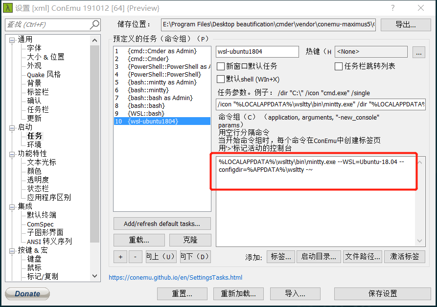

Table of Contents
参考资料
wsltty
Mintty as a terminal for WSL (Windows Subsystem for Linux)
与cmder集成
%LOCALAPPDATA%\wsltty\bin\mintty.exe --WSL=Ubuntu-18.04 --configdir=%APPDATA%\wsltty -~

配置文件路径及内容
%userprofile%\AppData\Roaming\wsltty\config
# To use common configuration in %APPDATA%\mintty, simply remove this file Font=MesloLGS NF ClicksTargetApp=no Scrollbar=none FontWeight=400 FontHeight=12 CursorType=block ForegroundColour=131, 148, 150 BackgroundColour= 0, 43, 54 CursorColour= 220, 50, 47 Black= 7, 54, 66 BoldBlack= 0, 43, 54 Red= 220, 50, 47 BoldRed= 203, 75, 22 Green= 133, 153, 0 BoldGreen= 88, 110, 117 Yellow= 181, 137, 0 BoldYellow= 101, 123, 131 Blue= 38, 139, 210 BoldBlue= 131, 148, 150 Magenta= 211, 54, 130 BoldMagenta= 108, 113, 196 Cyan= 42, 161, 152 BoldCyan= 147, 161, 161 White= 238, 232, 213 BoldWhite= 253, 246, 227
wsl(Windows Subsystem for Linux)
# win+x，选择Windows PowerShell（管理员）输入 Enable-WindowsOptionalFeature -Online -FeatureName Microsoft-Windows-Subsystem-Linux
在普通cmd中启动
ubuntu1804
cmder
babun
替换cygwin为64位
终端被BLODA影响严重，弃用babun
zsh
sudo apt-get install zsh
# 将用户的shell设置为/usr/bin/zsh
vim /etc/passwd
powerlevel 10k
vim ~/.zshrc
# Add zinit ice depth=1; zinit light romkatv/powerlevel10k to ~/.zshrc zinit ice depth=1; zinit light romkatv/powerlevel10k
字体安装
zinit
sh -c "$(curl -fsSL https://raw.githubusercontent.com/zdharma/zinit/master/doc/install.sh)"
vim ~/.zshrc
# 添加如下插件
zplugin light zsh-users/zsh-autosuggestions
zplugin light zdharma/fast-syntax-highlighting
zplugin snippet OMZ::lib/clipboard.zsh
zplugin snippet OMZ::lib/completion.zsh
zplugin snippet OMZ::lib/history.zsh
zplugin snippet OMZ::lib/key-bindings.zsh
zplugin snippet OMZ::lib/git.zsh